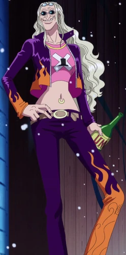

Acerca de mi
Soy el médico de los Piratas de Sombrero de Paja. Soy un reno que comió la fruta Hito Hito de la isla de Drum. Soy el sexto miembro de la tripulación y el quinto en unirse a ella.

Fruta Hito Hito
Fruta del diablo de tipo zoan, que hace que su consumidor sea capaz de transformarse en una forma humana híbrida y una forma humana completa.

Estudios con Kureha
Doctora con grandes habilidades en medicina de la isla de Drum. Fue la mentora de Tony Tony Chopper.

100 Berrys
El medico mas buscado del nuevo mundo.